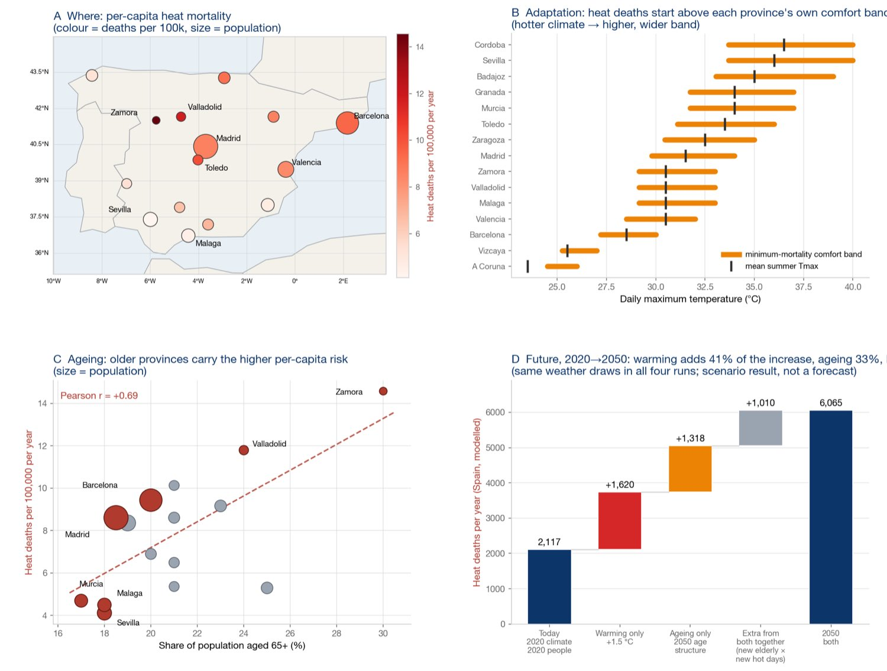

{kind=link}
Adaptation sets the threshold; ageing sets the toll.
Heat-attributable deaths in Spain, modelled as a peril in CLIMADA (ETH Zürich’s open-source climate-risk platform) and checked against 45 observed summers and Spain’s mortality surveillance (MoMo) — plus what the same platform quantifies for typhoon, flood, wildfire and earthquake risk.
Risk follows adaptation and age, not the thermometer.

A Where. Deaths per 100,000 (colour), population (size). The hot south sits at the bottom of the scale; Castile’s cooler, older provinces at the top.
B Adaptation. The comfort band is the temperature range where mortality is lowest; deaths start above its upper edge, and hotter provinces have higher bands. Raw temperature explains risk at r = −0.24; heat above the band at r = +0.90.
C Ageing. The share aged 65+ explains most of the remaining spread (r = +0.69). The hot south sits low for two reasons: a higher comfort band (B) and a younger population (C).
D Future. Same model, 2020 → 2050, 15 reference provinces (27.2 M people): +3,948 deaths/yr = 1,620 from warming (+1.5 °C) + 1,318 from ageing + 1,010 extra because the new elderly also live through the new hot days. Scenario, not a forecast.
Physics in the Hazard, biology in the impact function.
Observed daily Tmax. E-OBS, Europe’s gridded station dataset (0.25°), Jun–Sep 1980–2024; 827 land cells, 45 complete summers.
Local comfort band. Each cell’s minimum-mortality threshold Hc from its own climatology — acclimatisation sits in the hazard.
Hazard = exceedance degree-days. One CLIMADA event per summer, intensity in °C·days above Hc, frequency 1/45, tagged with its calendar year.
Exposure = people. WorldPop 1 km → 8,245 cells, 46.8 M persons, split <65 / ≥65; value_unit = persons.
Vulnerability = age dose-response. Two impact functions from RR = eβ(T−H); ImpactCalc returns expected annual deaths, per-event deaths and the return-period curve.
| CLIMADA object | Spain heat run |
|---|---|
| Hazard | 45 events × 827 centroids, °C·days, real years |
| Exposures | 8,245 cells, 46.8 M persons, two age bands |
| ImpactFuncSet | Age-band dose-response; impact = headcount · mdd · paa |
| ImpactCalc | aai_agg, at_event, freq curve, Warn.bin_map |
Every event is a real year, so the model can be checked — and it was.
MoMo (ISCIII) publishes observed excess deaths. The model reproduces the observed ranking without tuning; the size of the extremes does not yet match:
| # | Summer | °C·days | Modelled | MoMo |
|---|---|---|---|---|
| 1 | 2022 | 241.6 | 8,876 | ≈ 20,300 |
| 2 | 2023 | 179.6 | 6,693 | – |
| 3 | 2024 | 169.9 | 5,686 | – |
| 5 | 2003 | 165.3 | 6,189 | ≈ 18,000 |
| 45 | 1997 (coolest) | 37.0 | 1,390 | – |
2022: 8,876 modelled against ≈ 20,291 reported. Causes: 0.25° cell means smooth the peaks an exponential dose responds to most, and the attribution window is narrower than MoMo’s. Return periods stop at half the record (22 years); β and bands are literature-informed constants.
Not yet in the model: the urban heat island and the built environment — housing quality, air conditioning, green cover, health-system capacity. Within-city differences are therefore invisible. Adding them, from 1 km urban climate grids and building data, is our next development step.
One open risk engine for a portfolio: hazards, climate deltas, uncertainty, adaptation economics, finance.
What a portfolio assessment delivers
Average annual impact and return-period losses per asset and portfolio, with the tail truncated at what the record supports.
Climate-change deltas under RCP/SSP scenarios on the same event set (e.g. +16.5 % typhoon loss by 2040, RCP4.5).
Uncertainty decomposition (Sobol, total-order): vulnerability 83 %, exposure 20 %, hazard frequency 9 % in the Korean example.
Adaptation cost-benefit (Economics of Climate Adaptation) and finance channels: debt-service coverage and rating stress, NGFS carbon-price transition cost, input-output supply-chain losses.
Any gridded national dataset enters through one standardized import format (cell × year × intensity). The Korea Meteorological Administration’s 1 km scenarios and national flood-risk maps are being ingested this way.
Seoul · Busan · Ulsan, industrial assets, 2024 KRW. Scenario results, not forecasts.
| Output | Value |
|---|---|
| Typhoon expected annual loss | KRW 1.23 bn / yr |
| Change by 2040, RCP4.5 | +16.5 % |
| Earthquake expected annual loss | KRW 46 M / yr |
| Stressed DSCR (from 2.68) | 2.54 |
| Wind retrofit benefit / cost | 1.99 |
| Transition cost NPV, Net Zero 2050 | KRW 46.4 bn |
Vulnerability curves are global defaults pending calibration on Korean loss records — the next step we are taking.
Data — E-OBS v31 daily Tmax, 0.25° (ECA&D / Copernicus) · WorldPop 2020 1 km · MoMo (ISCIII) excess mortality · Natural Earth 1:110m · CLIMADA 6.1 (ETH Zürich, GPL-3.0). Comfort bands, β and baseline mortality are literature-informed.
Code — open source: github.com/sojin-droid/climaterisk. PLANiT — www.planit.institute · contact@planit.institute · Seoul, Republic of Korea. Licensed CC BY 4.0.